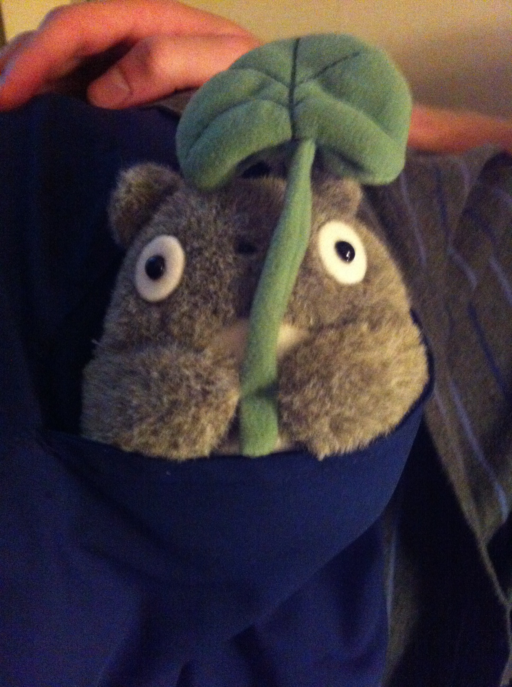

I am currently a Junior at the University of Michigan. I am pursuing a bachelors duel degree in Program in the Environment and Earth and Environmental Science (Geology) in the School of Literature Science and the Arts. My studies have allowed me to explore multiple disciplinary aspects of environmental science such as sustainability policy, resource scarcity, and behavior change. After I complete my undergraduate career, I would either like to find a company to work with that I adore or further my education by obtaining a master's degree in Hydrological Systems.
 Contact Info